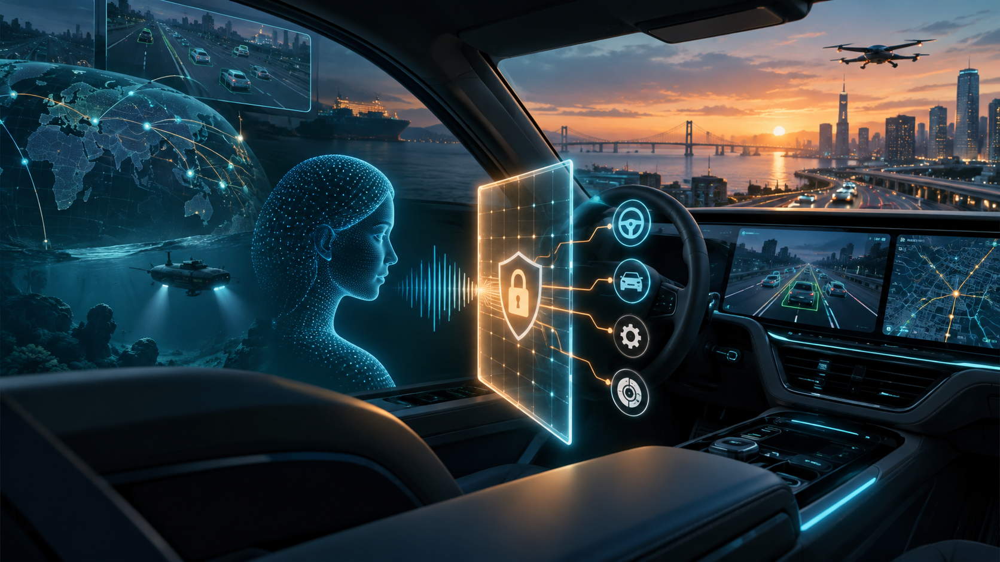
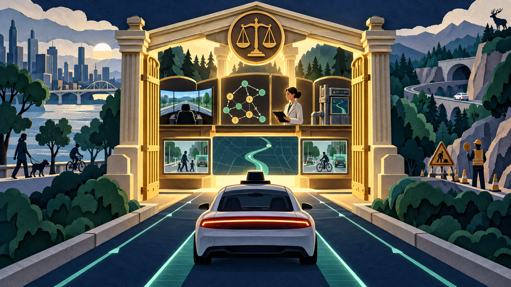
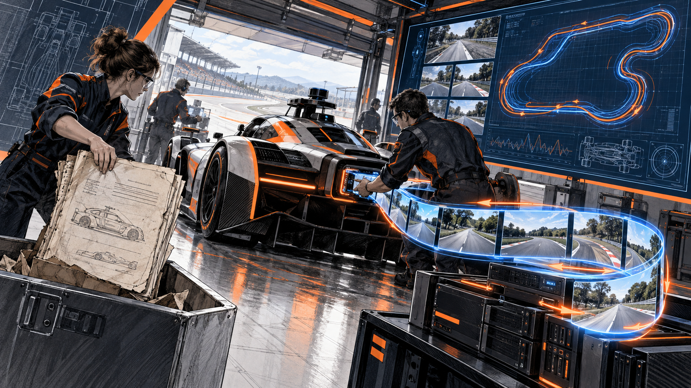

The Trophy Is Not the Test
An autonomous-driving model can climb a leaderboard and still barely change course for a pedestrian. This week, researchers began replacing applause with diagnosis.
Read the full story →
Who Holds the Keys When AI Enters the Vehicle?
Four new transportation-AI studies point toward the same design lesson: language models may advise, diagnose and simulate, while independent systems retain execution authority.
Read the full story →
The AI Should Not Hold the Steering Wheel. Let It Build the Crash Test.
A cluster of new studies moved language models away from direct control and toward a more defensible role: generating tests, measuring causal reasoning and deciding when autonomy should yield.
Read the full story →Twenty-Two AI Drivers Enter a Ring Road. Traffic Learns a New Kind of Instability
This week’s most provocative result was not that language models can control cars. It was that individually plausible choices can become a collective traffic wave.
Read the full story →
Teach the Car Where It Fails, Not Only Where Experts Succeed
RoG-DAgger turns an old driving-school truth into a post-training strategy: the dangerous lesson begins after the learner drifts away from the ideal route.
Read the full story →The Most Honest Transportation-AI Story This Week Is an Empty Road
No new transportation-specific LLM work cleared the evidence bar in this watch window. That quiet week is itself a useful signal about where the research pipeline remains thin.
Read the full story →The Camera Saw the Crash. Could It Explain What Happened?
A week of research exposed the difference between noticing an anomaly and understanding a transport system well enough to act without punishing innocent behaviour.
Read the full story →